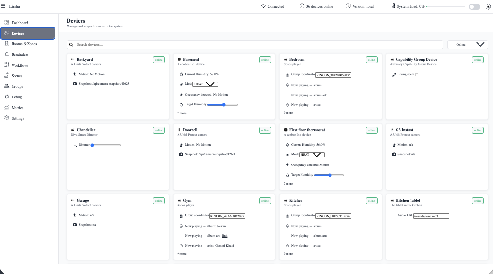

Hi, I'm Simon.
Software engineer. Full time curious person. This is the story part of the site, if you want it.

This is not me, this is just a photogenic person in a stock photo.
The Journey
I grew up in the MySpace era of customizing my page using copy-pasted HTML+CSS (R.I.P <marquee />), and once I came across PHP and saw that by typing just a few lines of magic I could fill an entire page I was hooked.
for ($i = 1; $i <= 6; $i++) {
echo "<h{$i}>Heading {$i}</h{$i}>\n";
}I went on to officially study programming and immediately got thrusted into a world of pointers and pointers to pointers, … to pointers (where half my class failed). Through sheer force of will (read: stubbornness) I persisted, then took a hiatus from programming while I amassed a huge wealth of knowledge and skills in the art of World of Warcraft, before dusting them back off. In 2011 I moved from Sweden to England and joined a fantastic little company called DriveWorks, working on the Microsoft stack.
As someone that has always relentlessly pursued answers and demanded to know “how things work” (sorry for all the “Why?”s, mom!), I was pumped when the Raspberry Pi 1 came out, immediately bought one and started hacking away at ARM assembly, bending that tiny embedded LED to my will. Once assembly became too cumbersome and I started writing more C, what started out as 10 lines of assembly quickly grew over the coming years, a driver for reading from the SD card here, a display driver to render a console there, down to a full USB stack with keyboard & mouse support.
_start:
ldr r0,=BASE
ldr r1,=SET_BIT3
str r1,[r0,#GPFSEL2]
ldr r1,=SET_BIT21
str r1,[r0,#GPSET0]I moved again in 2017, this time across the pond to the good ‘ol US of A to be with my (now) wife, staying on at DriveWorks as their first remote engineer until 2019 when I was ready to take on a brave new challenge in another domain. Entering, HubSpot — a massive change, moving from code that reached customers a few times a year to code that reached them a few times a day.
Over time, the itch to just write some code™️ in my spare time returned, which coincided with me being fortunate enough to be able to buy a whole house with my wife. I’ve always loved the idea of connecting software to the physical world so it should come as no surprise that the world of IoT had caught my attention!
- Do I, install Home Assistant (or IFTTT/Homebridge/Homey/Hubitat/OpenHAB/Apple home/…)? Of course not, the itch is to write some code™️, not spend my evenings trying to debug yaml.
- Do I, create a web app that displays various stats gathered from sensors around my
house? Of course not, I create a drag and drop dashboard builder where I can build
ndashboards (one for each room where I want it) with click, navigate, modal popup etc support. - Do I, run a background process to provide automations (“At 17:30 turn on Dining Room lights”)? Of course not, I create a workflow engine with a visual editor where you can map out all of the states you want, connect them together with conditions and actions that get executed when entering a state.
- Do I, install libraries so that I can interface with the various IoT devices I have my eye on? Of course not, I scour the web for the HAP specification and build an entirely custom implementation.

The home automation system I’d built ran on my laptop for the longest time, before I graduated to running it on a single Intel NUC. These days it runs on a k3s cluster in a server rack in my house — which meant reintroducing the yaml I’d just spent a whole paragraph making fun of. The yaml is (mostly) gone now, because I ended up building Nimbus instead: a cluster management app that provisions VMs, deploys and scales things, and runs CI for everything I write. More on that later...
If you've read this far and are wondering whether any of it — the PHP, the assembly, the dashboards nobody asked for — was the practical, sensible way to do things: no. But it's fun, and I learn a lot. Any software engineer can tell you we're all too familiar with having to be pragmatic at work; programming at home, on hobby projects, is the outlet where I get to not be.
So long (for now)
— Simon